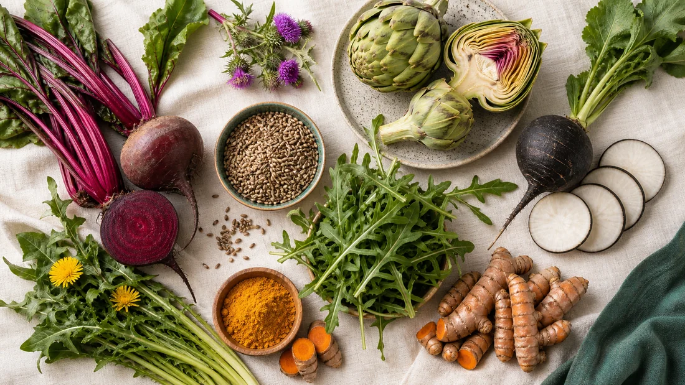
мягкая поддержка
Печень
- Расторопша
- Свёкла
- Редька
- Руккола
- Одуванчик
- Артишок
- Куркума
мини-гайд по живой еде
Какие продукты помогают поддерживать разные органы организма
Иногда организму нужно не больше лекарств.
Иногда ему нужно больше правильной еды.
Вот моя любимая шпаргалка из живых растительных продуктов.
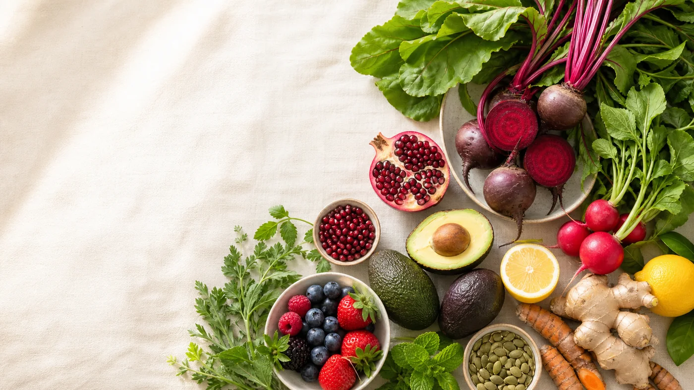
живая продуктовая карта
Выберите систему или найдите продукт, который хотите добавить в рацион.
12 карточек

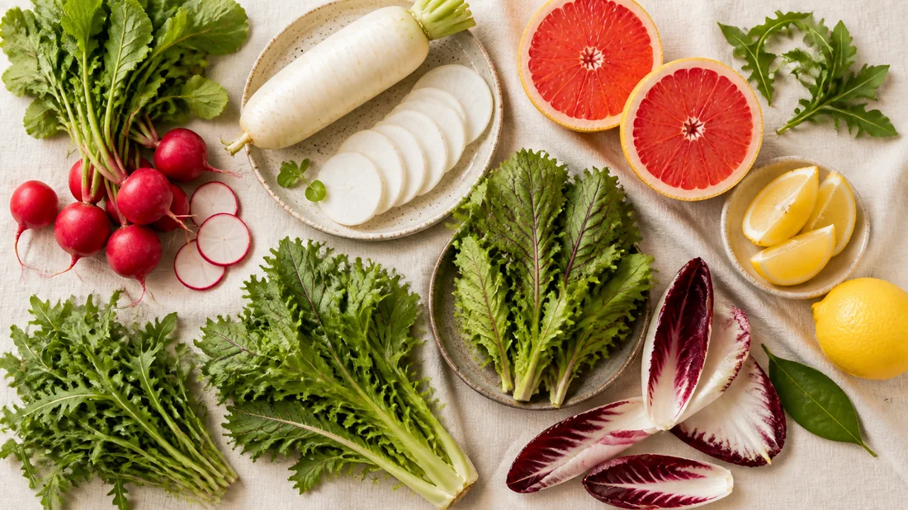
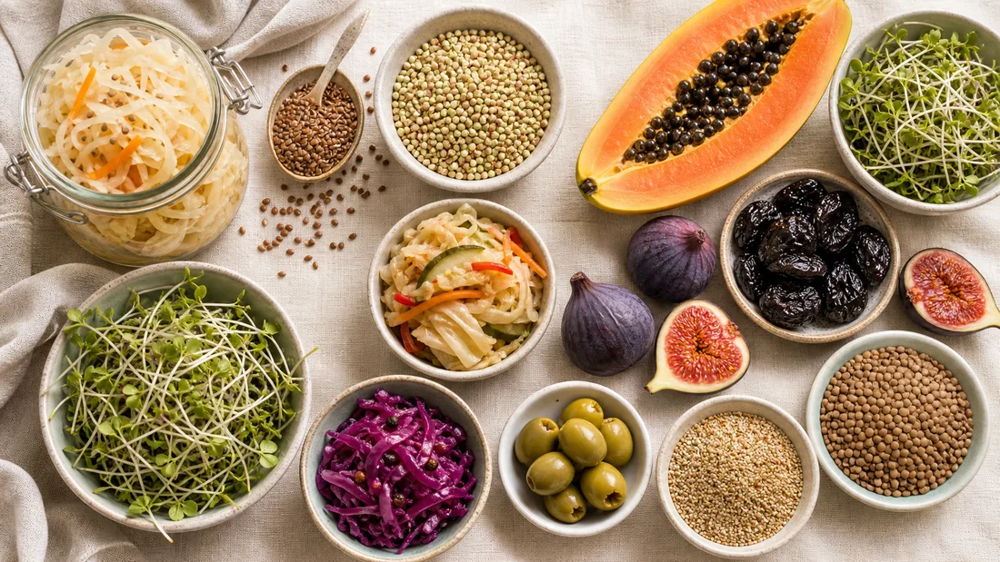
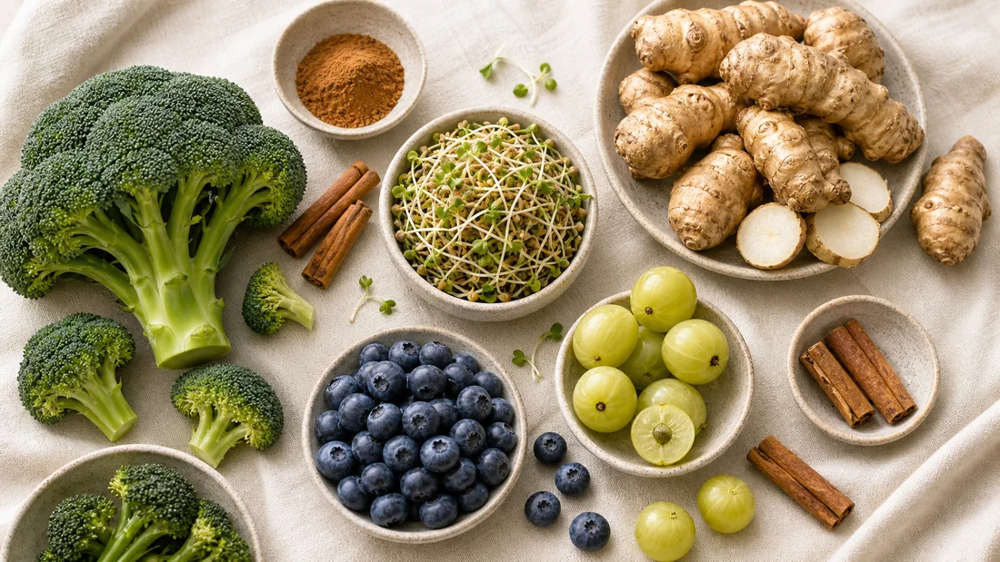
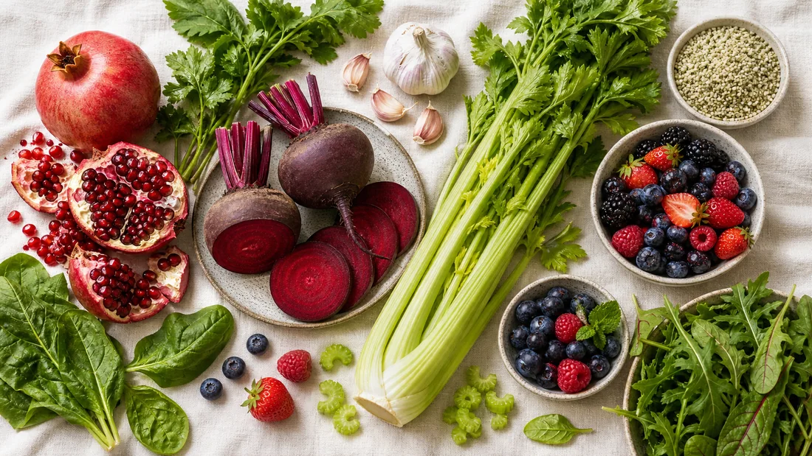
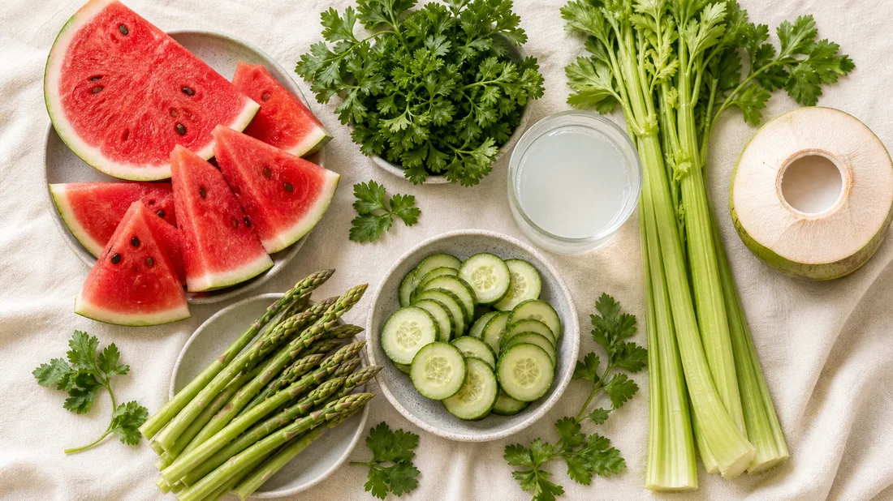
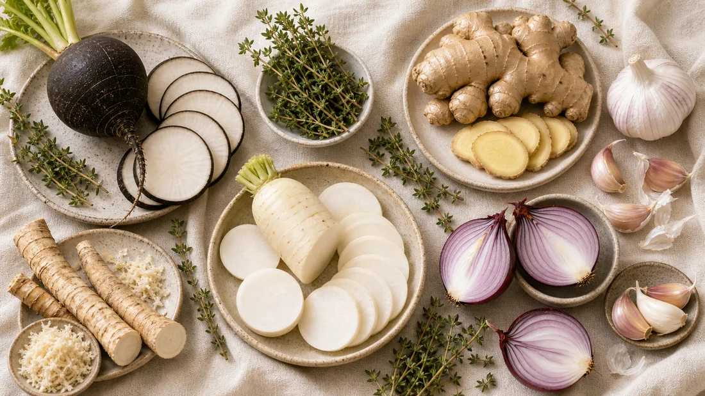
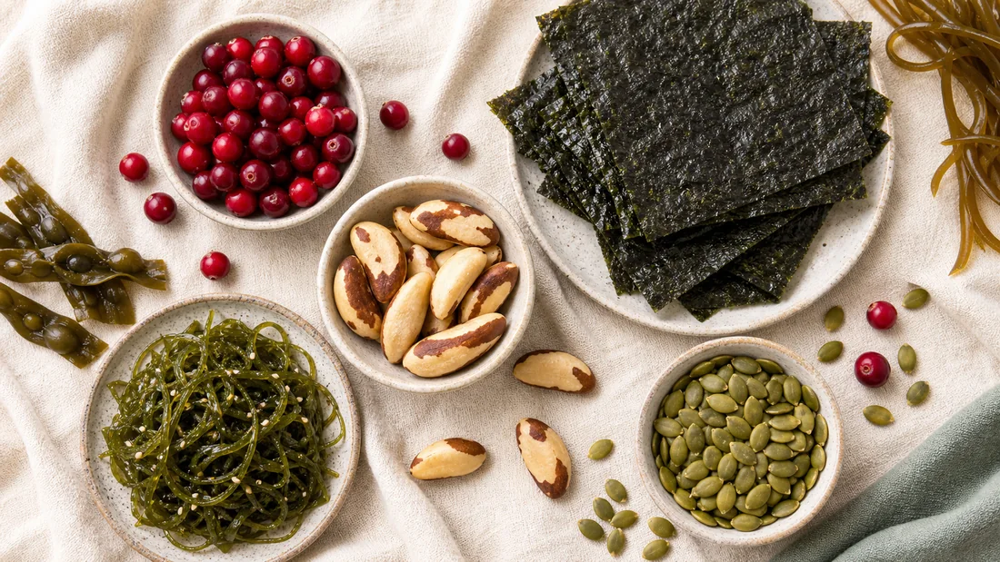
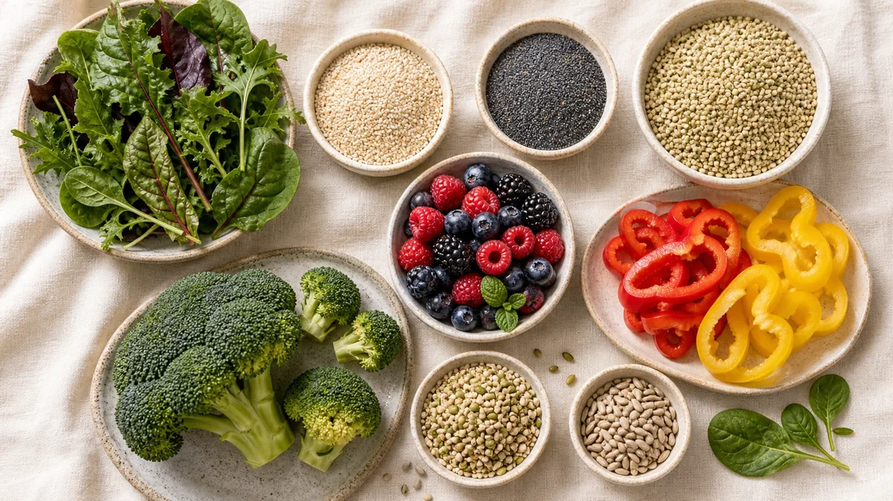
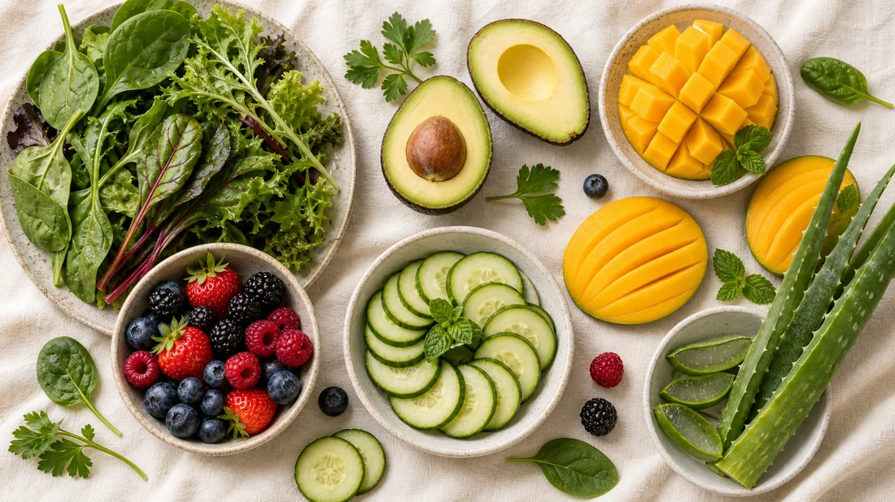
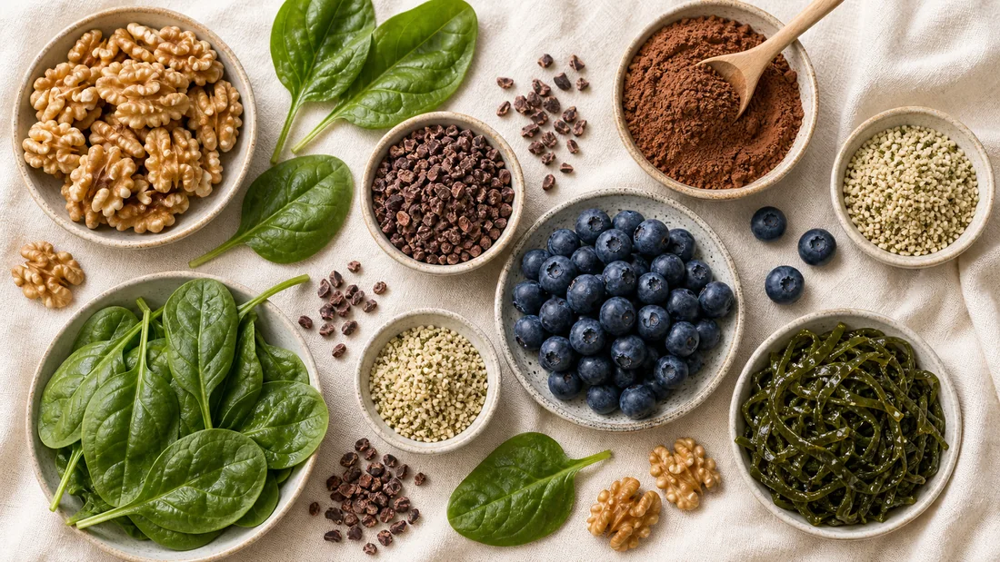
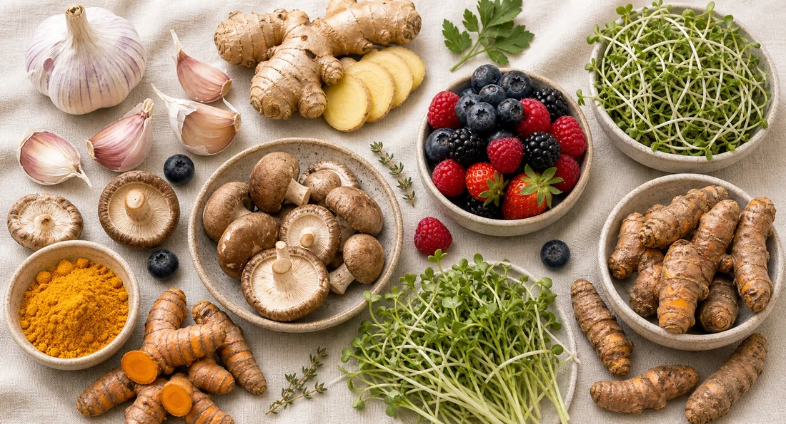
главное помнить
Самое удивительное, что многие из этих продуктов работают сразу на несколько органов одновременно.
Именно поэтому в природе нет отдельных продуктов «для печени», «для кожи» или «для кишечника».
Восстановление часто начинается не с таблетки, а с тарелки.
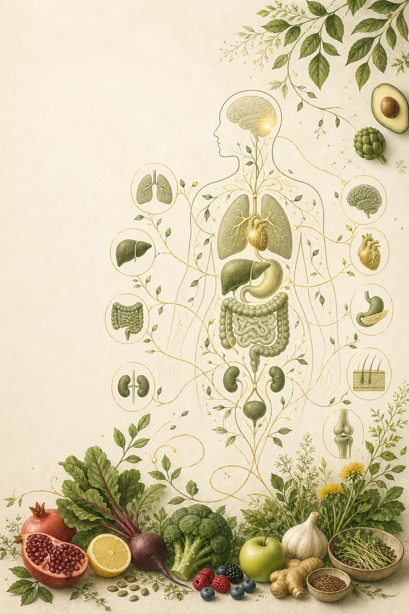
бесплатный вебинар
практика на 21 день
Программа живого растительного исцеляющего питания на 21 день.
Старт — 28 июня